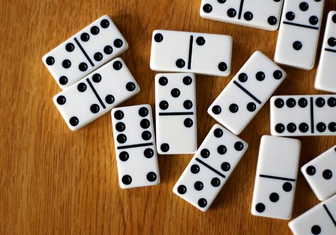

La Ficha
La interacción estratégica es el concepto central que da vida a la teorÃa de juegos. Describe la forma en que las decisiones tomadas por un jugador en un escenario son moldeadas por las decisiones de los demás y tienen un impacto en ellas. A diferencia de la toma de decisiones aislada, en la que las decisiones se toman independientemente de las acciones o respuestas de los demás, la interacción estratégica implica la conciencia constante de que las acciones de cada participante afectan y son afectadas por las elecciones de todos los demás. Este tipo de interacción crea una intrincada red de expectativas, predicciones y ajustes, ya que cada jugador busca maximizar sus propios resultados a la luz de lo que cree que otros podrÃan hacer.

En la interacción estratégica, los jugadores no actúan de forma aleatoria o impulsiva, sino de forma calculada, con intenciones que reflejan sus mejores predicciones sobre las probables respuestas de los demás. Este enfoque contrasta marcadamente con la toma de decisiones estándar, donde las elecciones son en gran medida independientes, sin necesidad de tener en cuenta la posible reacción de otra persona. A través de la interacción estratégica, los jugadores entran en un intercambio dinámico de movimientos y contramovimientos, que a menudo resulta en un equilibrio estable o un patrón de comportamiento que refleja las preferencias y estrategias combinadas de todos los participantes.
Luis Del Toro. Breve Introducción a los Fundamentos de la TeorÃa de Juegos : La guia completa para comprender la estrategia, la toma de decisiones y la resolucion de conflictos (p. 10).
Campeón de la temporada

¡Ah, qué pedazo de temporada nos dejó el Verano 2025 en la CDMX, compadres! Resulta que el Oso Celta —aka PetaGeorgio, aka Gummy Bear— se plantó en la cancha de dominó como si fuera Thor con resaca, pero en vez de martillo, traÃa fichas y una actitud de “aquà mando yo, y si no les gusta, aguantense”.
Diez semanas de guerra sin cuartel, de sangre, sudor y más sudor (porque en esta ciudad hasta el aire acondicionado se rinde), y el Oso Mandilón gobernó el tablero como un vikingo en su drakkar, pero en vez de navegar mares bravÃos, arrasó con rivales como si fueran fichas de plástico en un temblor del 85. ¡Y no fue suerte, no! Fue pura estrategia, mano frÃa y ese instinto jarocho que solo se saca con tajÃn, cerveza bien frÃa y una paciencia de santo (o de diablo, según a quién le preguntes).
Y asÃ, sin chistar, el Master de las Fichas hizo lo suyo: se coronó por segunda vez como Campeón Mundial de Dominó, dejando a la competencia más perdida que turista en Tepito sin Google Maps. ¡Doble corona, doble leyenda! 🏆🔥
Marcador Corona

Un temporada más, una divertida noche de viernes, un rompecabezas más que ganar! Asà cerramos la temporada del verano de 2025. 😅🆠Aquà tenemos a los luchadores desde su última partida en el inframundo!ğŸ»âœ¨

Tendencia por Jugador

Rendimiento por pareja
¡Jerry Caimán ğŸŠâš¡ y Piztach Arrakadas 🌟🦜 se disparan como la pareja más filosa de la temporada! 🔪🯠¡Aguas, que estos dos no perdonan ni en Navidad! ğŸ„💥 #DinamitaPura #DominóDeInfarto
Saldo de Viernes por Jugador
¡Kilate Mandalorian y Oso Petatero, la dinámita pura! 💥 Los rudos más rudos de la temporada con noches de más de diez puntos! repartiendo cachetadas con guante de oro!

El Rosita y más allá